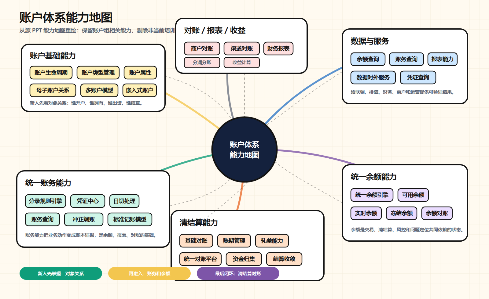
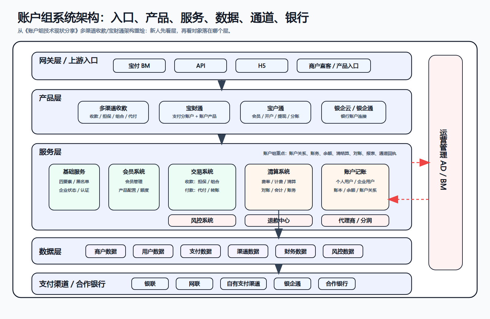
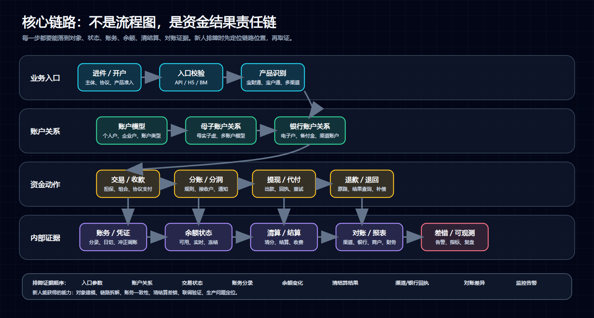
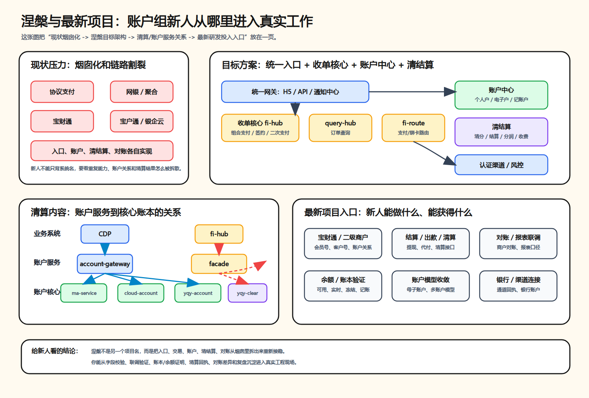
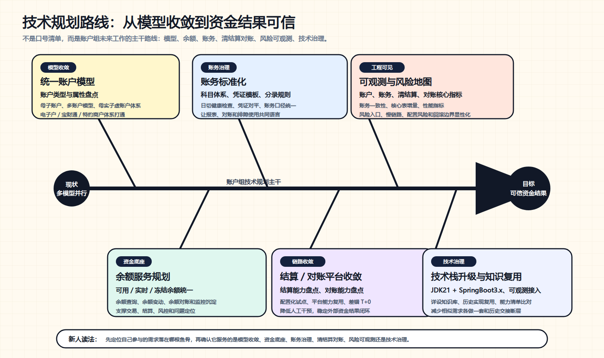

账户组体系：从资金账户链路到 AI 协作成长
这份 H5 先讲清账户组管的资金结果，再拆开账户、账务、余额、清结算、对账、银行账户关系和项目入口。
先看身份和账户关系，再看交易、分账、账务、余额、清结算、对账如何共同证明资金结果可信。
对象关系决定接口字段、校验规则、异常排查、差错处理和回归用例如何设计。
从账户模型、余额账本、结算出款、对账报表、银行通道和可观测治理里练出可交付能力。
你加入的是什么小组
你加入的是账户技术小组，主要支撑账户体系、账务处理、余额服务、清结算、对账报表、银行账户关系和账户渠道接入。
围绕商户、会员、客户、个人户、企业户、母子账户、银行账户和渠道账户建立稳定的账户关系与资金处理能力。
小组沉淀账户模型、账务规则、余额能力、结算出款、清算对账、报表数据、通道接入和风险可观测能力。
新人从字段理解、接口联调、账本/余额验证、清算回执、对账差异和问题复盘进入真实工程任务。
账户体系能力地图
这张图按源 PPT 能力地图重绘。新人先抓三条主线：对象关系、账务和余额、清结算对账。

账户生命周期、账户类型、账户属性、母子账户、多账户模型决定资金能不能进入正确账户。
分录规则、凭证、日切、冲正调账、可用余额、实时余额和冻结余额证明内部账是否正确。
基础对账、账期、轧差、资金归集、报表和数据服务负责把内部结果对到外部事实。
整体系统架构
这张图按多渠道收款和宝财通架构重绘。新人要知道每个产品对象落在哪一层，账户组重点在哪里。

API、H5、BM、商户直客入口决定请求从哪个产品、哪个身份、哪个场景进入资金链路。
账户记账、清算系统、交易系统、会员系统、退款中心和风控系统共同决定资金动作是否被正确处理。
银联、网联、自有渠道、银企通和合作银行的返回结果，会影响清结算、对账和差错处理。
核心业务链路
这张图把核心链路重绘成资金结果责任链。它不是五个动作，而是四层证据：入口、账户关系、资金动作、内部证据。

先判断问题发生在进件开户、账户关系、交易资金动作，还是账务余额和清结算对账。
不要只说“失败了”，要能拿出入口参数、账户关系、交易状态、账务分录、余额变化和通道回执。
从这条链路练对象建模、链路拆解、清结算差错、账务一致性、联调验证和生产问题定位。
我们支撑的对象
业务对象要放回架构里看：它们分别占住入口、产品、服务、通道或银行连接位置，决定账户关系、字段校验、交易入口和结算规则如何组合。
上游入口接入 BM、API、业务产品后，进入收款、担保、组合、代付、转账等交易能力，再影响账户、账务和对账。
一边承接支付分账户产品，一边连接账户产品、清算系统、风控系统、退款中心和代理商分润。
适合新人理解个人开户、企业开户、转账、提现、会员模块、账户模型和账户侧配置如何串联。
重点看合作银行、银行账户关系、出款兼容、告警判断和外部结果如何反写到清结算与对账。
银联、网联、自有支付渠道和银行通道返回决定交易状态、入金状态、清算文件和渠道对账口径。
账本记录、凭证模板、余额变化和冻结状态是判断资金结果是否可信的内部证据。
结算周期、费率、分润、清算接口和出款回执决定一笔资金最终怎么离开账户体系。
对账平台、商户报表、财务报表和差错处理把内部账、外部流水和业务口径拉回同一事实。
常见问题定位
问题排查不是猜系统，而是把异常放回链路：入口是否正确、账户关系是否成立、账务余额是否一致、结算对账是否闭合。
先确认账户类型、可用余额、冻结余额、结算规则、出款状态和银行或通道失败回执。
优先看主体资料、产品配置、渠道报备、账户生命周期、母子账户关系和重复开户边界。
沿交易入口、支付渠道、银行账户关系、账户识别和账务落点确认资金是否进入正确链路。
区分交易完成、分录生成、记账完成、余额更新、报表生成和对账完成，避免把阶段混成一个问题。
确认内部账本、渠道流水、银行回执、商户报表和财务口径是否使用同一批次与同一状态。
先拆费率、分润、清算批次、出款结果和差错处理，再判断是规则问题还是外部回执问题。
对齐账务分录、实时余额、可用余额、冻结余额和补偿任务，定位是哪一层状态没有同步。
配置、规则、缓存、核心表增量和慢链路都可能影响账户结果，压测要能落到具体指标。
正在做的项目
这张图把涅槃材料和最新分账核心/宝财通改造报告合起来看：为什么要做、目标是什么、账户组新人能从哪里上手。

核心是把入口、交易、账户、清结算、对账从烟囱式实现里拆出来，重新定义边界和协作方式。
宝财通/二级商户、结算/出款/清算、报表/对账、余额/账本验证、账户模型和银行/渠道连接都在账户组工作面内。
从字段校验、联调验证、账本/余额证明、清算回执、对账差异和复盘沉淀开始，逐步进入完整资金链路。
技术规划路线
技术规划按路线理解：从多账户模型并行、烟囱式实现和账务口径差异，逐步收敛到账户模型、余额底座、账务标准、结算对账、可观测和技术治理。

统一账户类型、账户属性、母子账户和多账户模型，同时沉淀可用余额、实时余额、冻结余额和余额对账能力。
统一科目体系、凭证模板、分录规则和账务口径，推动结算、对账、差错处理和平台能力复用。
把核心链路指标、账务一致性、核心表增量、慢链路、配置风险、技术栈升级和知识复用纳入规划主线。
AI 如何与我们协作
账户组与 AI 协作要先给出账户域上下文、约束、证据和判断边界，让协作有输入、有门禁、有复盘。
账户组能提供什么
- 账户域地图 商户、会员、账户、银行账户、账本、余额、清结算、对账和报表之间的对象关系与链路位置。
- Account Harness 约束 把需求边界、源材料、章节结构、敏感信息过滤、验证命令、截图证据和门禁结论固定成可复用协作框架。
- 验证证据 字段、状态、账务分录、余额变化、清算结果、对账差异、截图、命令输出和 CR 记录，支撑 AI 结论可复查。
- 人工判断边界 账户模型取舍、账务口径、资金风险、上线节奏和产品承诺仍由工程师判断，AI 只能在约束内组织、比较、生成和检查。
新人怎么用这套协作
- 设计前 先给 AI 账户对象、链路位置、已有能力和不做范围，让它帮你找重复能力和影响面。
- 实现中 让 AI 围绕接口、字段、状态、分录、余额、清算和对账生成检查清单，但每条结论都要回到证据。
- 收尾后 把联调、差错、复盘和典型链路沉淀成后续新人能复用的对象、步骤、边界和验证材料。
管为什么做、做什么、不做什么、验收什么。
管历史详设、历史坑点、项目背景和复盘材料。
管模块边界、调用入口、相邻系统和影响面。
管新项目最小治理、知识入口和验证路径。
AI Coding 成熟度：当前站在哪一层
当前更接近 L2，已经能按约束完成单次任务；下一步是把 L2 -> L3 的阶段协作固定下来，让账户域工作按固定协议推进。
AI 主要用于解释代码、生成片段、整理笔记。效率提升存在，但上下文、验收和复盘还不稳定。
人定义目标和边界，AI 按 gate 执行。下一步不是堆更多工具，而是把需求 -> 设计 -> 研发 -> CR -> 验收 -> 沉淀固定成阶段协作。
每个阶段都有输入、输出、检查点和责任边界，AI 可以稳定协助推进，但关键判断仍由人确认。
自动路由、持续吸收、质量检查和证据回放成为常态；没有硬 gate 时，不应该提前宣称到达这一层。
新人前三天和第一周
上手节奏要务实：先拿到基本工作面，再跑通代码和项目，最后用一条账户链路完成第一次反馈闭环。
确认办公设备、必要账号、开发工具和沟通入口都可用；H5 只写安全边界，不暴露账号、内部地址或开通细节。
完成本地工程、依赖、启动、基础测试和关键模块阅读，先能找到账户、账务、余额、清结算、对账相关入口。
从一个低风险小任务开始，按需求确认、设计、实现、验证、CR 和复盘的顺序走一遍。
建议选择开户、收单/付款、分账/提现、账务/余额、清算/结算、对账中的一条链路，画出对象、状态和证据。
30 / 60 / 90 天成长路径
成长不是把系统名背全，而是逐步从听懂对象和链路、进入一个模块，到能独立排障并交付小任务。
能讲清商户、会员、账户、银行账户、账本、余额、清算、结算、对账这些对象之间的关系。
在账户模型、账务、余额、清结算、对账报表或渠道接入中选择一个模块，完成接口理解、字段校验、联调验证和小范围改动。
能独立定位一类常见问题，给出验证证据、风险说明和回归范围，并把经验沉淀成后续新人可读的材料。
新人可以进入的任务池
任务池的重点是让你在真实账户链路中练出硬能力，而不是只做零散支持。
从低风险改动开始，学习账户类型、字段兼容、关系校验、回归范围和发布验证。
把字段、状态、流水、账本、余额、报表和对账口径对齐，练习把结果说清楚而不是只说“能跑”。
围绕开户失败、提现失败、入账慢、结算差异、对账不平、余额不一致等场景，形成排查路径和复盘模板。
学习资金类指标、账户类指标、核心链路监控、告警含义、处理边界和升级时机。
把一次联调、一类异常或一条账户流程写成新人能读懂的页面，沉淀对象、步骤、证据和注意事项。
练习用 OpenSpec、Lore、Graphify 和 lore-bootstrap 组织账户域任务，让 AI 帮忙查结构、查历史、保留证据，而不是替代判断。
学习目标总结
你不是来接需求，而是学习如何管住资金账户链路。